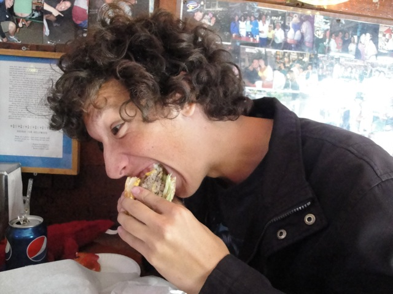
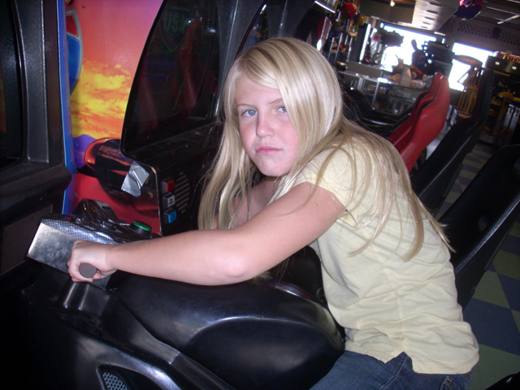

The Santa Monica Pier is a very intersting park. My thoughts on the park have greatly flucuated throughout the years. I took my first visit to the Santa Monica Pier in 2002 and I really enjoyed it. But when I visited the park twice in 2006, I was not impressed. Sure, it has a nice atmosphere, but that's about it. The rides sucked, the food is expensive, the service was low quality and the time you'll have will suck. Then in October of 2008, I attemped to give the park a check up and see how it was doing. It turns out they couldn't even keep the f*cking park open for no reason what so ever. Finally, April 2010, I gave them another chance, and sure enough, the park was open, the service was good, and I had fun. And the two person Top Spin alone is worth coming down here for. So that's good to know. While the Santa Monica Pier is far far the best amusement park, it's a small little theme park, which doubles as a tourist trap, that you can go to have fun at.
Here are the reviews of all the Flat Rides at the Santa Monica Pier. Like most of the parks in Southern California, the Santa Monica Pier has a crappy flat ride collection. But it's still a decent collection for what it is. The best of those flat rides is by far the Two Person Top Spin. It may be an upcharge, but it is totally worth the $5.00!! Now on the Two Person Top Spin, you get a joystick and you get to control the program. And since I rode with Cody, we turned this thing into a Zipper. In fact, this two person Top Spin is the best non fair flat ride in California!!! Now onto the rest of their flat ride collection. First off, they've got Pacific Plunge. Pacific Plunge is a super frog hopper. However, it is really cool as it gives you a tingly feeling in your stomach in every drop. ! Another flat ride they have at the Santa Monica Pier would have to be the scrambler. Now originally, I was very upset about taking out their Chaos for this scrambler, but now I don't care anymore as the two person Top Spin more than makes up for it. Another thing they have at the Santa Monica Pier is the solar powered ferris wheel. While it's only a small little ferris wheel, it still gives you a good view of the pier and hopefully, they'll start a trend and some other park will get a huge solar powered ferris wheel. Do it!!! We need more Solar Energy!!! Other flat rides at the Santa Monica Peir include a pirate ship, a carousel, that trampoline thing, and while I never rode it, they have some flying saucers, like the ones that used to be in Disneyland and are found in RCT. They definetly look cool and a lot better than the bumper cars that used to be here.
The best non fair flat ride in California.
Water Rides
The Santa Monica Pier currently has no water rides.
Dining
While I am happy about the improvements of everything else in the Santa Monica Pier, my feelings about their food still remain the same. The food there is terrible and overpriced. Back in 2006, I had to pay $8.00 for a meal at their freaking Taco Bell!!! I know that they're supposed to jack up the price at an amusement park, but God Damn!!! It was a sh*tty Taco Bell as well. The Taco Bell right by my house had far better food, service, and obviously prices. However, they do have good food outside the amusement park part of the Santa Monica Pier such as Bubba Gumps. And they have some nice resteraunts right outside the Santa Monica Pier including Big Deans. So if you're heading to the Santa Monica Pier, leave the amusement park section to eat.
I am not lying about the Taco Bell Prices.

Not only is this burger huge and tastey, but it's also cheaper than the Santa Monica Pier's Taco Bell.
Theming and Other Attractions
Here are the reviews of all the other stuff at the Santa Monica Pier. For theming, just look at the ocean and the beach. That's all the theming you need. As for other stuff, they do have one of those bungee trampolines that you can do flips on. So that is also fun. And apparently since my last visit, they got an obstacle course. But yeah. They've got some typical pier stuff at the Santa Monica Pier.

Here is Celeste hanging out in the arcade at the Santa Monica Peir.
In Conclusion
While the Santa Monica Pier does have some flaws, it is a fun place to go and enjoy the day as there are many things to do and a decent collection of rides. And if you're a fan of beaches, you'll love the beach next to the Santa Monica Pier. Much better than Ventura's beaches. So yeah. You'll have fun at the Santa Monica Pier.
Enthusiast FAQs.
*Are there kiddy coaster restrictions? - The Santa Monica Pier doesn't have any kiddy coasters.
Tips
*Get a wristband if you plan on riding everything.
*Ride the two person Top Spin
*Eat outside the pier. The food is both better and cheaper.